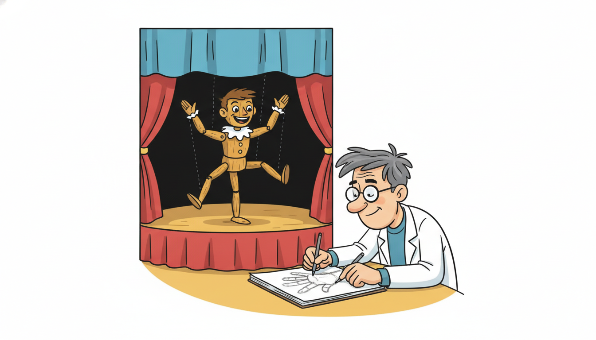

"They never measure me. They measure my shadow on the wall, blurred by whatever noise the day brought, and from that smudge they reconstruct me anyway. I have stopped resenting it. A good estimate, I have decided, is the sincerest form of being seen."
A Latent State Nobody Ever Measures Directly

A state-space model splits a temporal system into two layers: a hidden state that evolves on its own dynamics, and a noisy measurement that is all we ever observe; the entire job of inference is to reconstruct the hidden layer from the observed one. Almost every model in the rest of this book is, at heart, this same two-layer picture. The classical forecasters of Chapters 5 and 6 model the observed series directly; the state-space view steps behind the series to a latent variable that generates it, then asks what that latent variable must be doing given what we saw. The payoff is enormous and threefold. First, the hidden state is a compressed summary of the entire past that is sufficient for the future, so once we know it we can throw the history away (the Markov-on-state property). Second, this single formulation swallows ARIMA, exponential smoothing, unobserved-components, and dynamic factor models as special cases, so one inference engine, the Kalman filter of Section 7.2, serves them all. Third, the very same hidden-state idea returns, learned rather than specified, as the hidden state of a recurrent network in Chapter 10 and the structured state-space models of Chapter 13. This section builds the linear-Gaussian state-space model, defines the transition and observation equations and the meaning of each matrix, distinguishes the filtering, prediction, and smoothing tasks precisely, shows why state-space is the unifying language of classical forecasting, and closes with a local-level model built from scratch and through statsmodels.
The previous chapter, on multivariate and econometric models, took the observed series at face value: the vector autoregression of Section 6.1 forecast every series directly from the lagged values of every series, and the cointegration and factor methods of Section 6.4 already gestured at hidden common drivers behind a panel. This chapter makes that hidden layer the protagonist. We stop modelling the observation and start modelling the thing behind the observation, the state, with the observation demoted to a noisy, possibly incomplete window onto it. The reader should arrive comfortable with linear-Gaussian algebra (multivariate normals, covariance matrices, linear maps), the lag operator, and the companion-form rewrite of Section 6.1, because the state vector here is the direct descendant of that stacked companion state. Throughout we use the symbols of the unified notation table in Appendix A: $\mathbf{z}_t \in \mathbb{R}^d$ for the latent state, $\mathbf{x}_t \in \mathbb{R}^K$ for the observation, $F$ for the transition matrix, $H$ for the observation matrix, and $Q, R$ for the process and measurement noise covariances.
1. The Core Idea: A Hidden State That Summarizes the Past Beginner
Start with the physical intuition before any equation. A drone has a true position and velocity at every instant; that is its state. We never observe the state. We observe GPS pings and accelerometer readings, each a corrupted, partial function of the true state. A patient has a true underlying physiological condition; we observe a handful of noisy vitals sampled when a nurse happens to take them. A market has a true latent volatility; we observe only the returns it produces. In every case there is a quantity that genuinely drives the system, evolving by its own rules, and a separate quantity that we actually get to measure, related to the driver but blurred by noise and often lower-dimensional than it. The state-space model is the formal commitment to keeping these two quantities distinct: a state that evolves, and an observation that reports on the state through a haze.
The conceptual heart of the formulation is what the state is for. The state $\mathbf{z}_t$ is defined to be a sufficient summary of the entire history up to time $t$: everything in the past that is relevant to predicting the future is compressed into $\mathbf{z}_t$, so that conditioning on the full past is no better than conditioning on the current state alone. Formally, the model assumes the Markov property on the state,
$$p(\mathbf{z}_t \mid \mathbf{z}_{t-1}, \mathbf{z}_{t-2}, \dots, \mathbf{z}_0) \;=\; p(\mathbf{z}_t \mid \mathbf{z}_{t-1}),$$and that each observation depends only on the contemporaneous state,
$$p(\mathbf{x}_t \mid \mathbf{z}_t, \mathbf{z}_{t-1}, \dots, \mathbf{x}_{t-1}, \dots) \;=\; p(\mathbf{x}_t \mid \mathbf{z}_t).$$These two conditional-independence statements are the entire structural content of a state-space model; the matrices and noise distributions to come are just one particular linear-Gaussian way of filling them in. The first says the state carries all the memory: the future is independent of the deep past once you know the present state. The second says the observation is a momentary readout of the state with no memory of its own. Together they license the most important computational fact in this book: we can process a stream one step at a time, carrying forward only a fixed-size belief about the current state, never re-reading the history. That recursive, constant-memory processing is what makes the Kalman filter (and later the RNN, and the structured state-space model) tractable on arbitrarily long sequences.
Contrast this with the direct modelling of the previous chapters to see what is genuinely new. An autoregression carries memory by literally storing the last $p$ observations and regressing on them; its "state" is the raw recent past, and to extend the memory you must lengthen the window and pay for more lags. A state-space model instead carries memory in a compressed latent vector whose dimension is fixed regardless of how far back the relevant history reaches: a single state component evolving as a slow random walk can summarize an arbitrarily long trend, and a small rotating block can summarize a season of any past length. The state decouples how much history matters from how much you must store, which is precisely the decoupling that lets the same idea, scaled up and learned, handle sequences of thousands of steps in the deep-learning chapters without a thousand-tap window. This is also why a state-space model can absorb an irregular or gapped series gracefully: a missing observation simply means a step with no update, the state coasting forward on its dynamics, whereas a fixed-lag autoregression chokes on the hole in its window.
It is worth being precise about the word "sufficient," because it is the idea that elevates the state from a modelling convenience to a deep principle. A sufficient statistic is a function of the data that loses no information about a quantity of interest. Here the quantity of interest is the future of the series, and the claim is that $\mathbf{z}_t$ is a sufficient statistic of the past $\mathbf{x}_{1:t}$ for that future. A long series might have thousands of past observations, yet a state of dimension two or three can carry all the predictively relevant information in them. The state is a lossless compression of the past with respect to prediction: it may forget the exact values the series took, but it cannot forget anything that would have helped forecast what comes next. This is exactly the property we will later ask a recurrent network to learn rather than be told.
The single idea to carry out of this section is that a hidden state earns its name by being a compressed summary of history that is sufficient for prediction. If two different pasts lead to the same state $\mathbf{z}_t$, the model treats their futures as identically distributed, because by construction the state holds everything about the past that the future depends on. This is why a state of fixed, small dimension can stand in for an ever-growing history: it is not storing the history, it is storing the only thing about the history that matters. Every sequence model you meet later is a variation on how to construct and update such a sufficient state. The Kalman filter constructs it as a Gaussian posterior; the RNN of Chapter 10 constructs it as a learned nonlinear recurrence; the structured state-space model of Chapter 13 constructs it as a linear recurrence with carefully parameterized dynamics. Different constructions, one principle: compress the past into a state that suffices for the future.
The hidden state introduced here is the conceptual spine of Building Temporal AI, and it recurs in learned form throughout. In this chapter the state is a Gaussian vector with a transition we write down by hand, and the Kalman filter of Section 7.2 maintains the exact posterior over it. In Chapter 10 the same hidden state becomes the recurrent cell of an RNN: $\mathbf{z}_t = \sigma(F\mathbf{z}_{t-1} + \dots)$ is the linear-Gaussian transition with the Gaussian assumption dropped and the matrix $F$ learned by gradient descent rather than specified. In Chapter 13 the structured state-space models (S4, Mamba) return to a linear recurrence like ours, but parameterize the transition to control its spectrum and run it convolutionally over long sequences, recovering the efficiency of the Kalman recursion at deep-learning scale. The discrete-state cousin, the hidden Markov model later in this chapter, returns as the neural latent-variable model of Chapter 17 and the belief-state agent of Chapter 23. When you understand why a small hidden state can summarize an unbounded past, you have understood the load-bearing idea behind half of this book. The full set of these arcs is routed through the table of contents at toc.html until the forward chapters are wired directly.
2. The Linear-Gaussian State-Space Model Intermediate
The conditional-independence structure of subsection one admits many concrete realizations; the linear-Gaussian one, the workhorse of this chapter, fills in both conditionals with linear maps and Gaussian noise. It is specified by two equations. The transition equation (also called the state equation) governs how the hidden state evolves,
$$\mathbf{z}_t \;=\; F\,\mathbf{z}_{t-1} \;+\; \mathbf{w}_t, \qquad \mathbf{w}_t \sim \mathcal{N}(\mathbf{0},\, Q),$$and the observation equation (also called the measurement equation) governs how each state is reported,
$$\mathbf{x}_t \;=\; H\,\mathbf{z}_t \;+\; \mathbf{v}_t, \qquad \mathbf{v}_t \sim \mathcal{N}(\mathbf{0},\, R).$$The two noise streams $\mathbf{w}_t$ and $\mathbf{v}_t$ are assumed mutually independent, independent across time, and independent of the initial state $\mathbf{z}_0 \sim \mathcal{N}(\mathbf{m}_0, P_0)$. Because every operation is linear and every noise is Gaussian, the entire joint distribution of states and observations is Gaussian, which is the property the Kalman filter exploits to keep its beliefs Gaussian forever. Each object in these two lines has a precise and worth-memorizing meaning, set out next.
It pays to read the two equations as a generative recipe and write down the conditional distributions they induce, because those two Gaussians are literally the linear-Gaussian realization of the abstract conditionals $p(\mathbf{z}_t \mid \mathbf{z}_{t-1})$ and $p(\mathbf{x}_t \mid \mathbf{z}_t)$ of subsection one. The transition equation says the next state is the old state pushed through $F$ plus a Gaussian kick, so
$$p(\mathbf{z}_t \mid \mathbf{z}_{t-1}) \;=\; \mathcal{N}\!\bigl(\mathbf{z}_t;\; F\mathbf{z}_{t-1},\; Q\bigr), \qquad p(\mathbf{x}_t \mid \mathbf{z}_t) \;=\; \mathcal{N}\!\bigl(\mathbf{x}_t;\; H\mathbf{z}_t,\; R\bigr).$$Because of the Markov and observation-independence structure, the full joint density of an entire run of states and observations factorizes into a product of exactly these two kinds of term, one transition factor and one observation factor per time step, anchored by the initial-state prior,
$$p(\mathbf{z}_{0:T}, \mathbf{x}_{1:T}) \;=\; p(\mathbf{z}_0)\prod_{t=1}^{T} p(\mathbf{z}_t \mid \mathbf{z}_{t-1})\, p(\mathbf{x}_t \mid \mathbf{z}_t).$$This factorization is the whole model on one line, and it is what every inference algorithm in this chapter operates on: filtering, smoothing, and likelihood evaluation are all just different ways of summing and conditioning this product of Gaussians. Reading it left to right is sampling (the generative direction, state then observation); reading it right to left, solving for the states given the observations, is inference (the direction the filter runs). Each object in these two equations has a precise and worth-memorizing meaning, set out next.
The transition matrix $F \in \mathbb{R}^{d \times d}$ encodes the system's intrinsic dynamics: how the state at one instant maps into the state at the next, absent any disturbance. Its eigenvalues control stability exactly as the companion matrix of Section 6.1 did: eigenvalues inside the unit circle give a mean-reverting state, an eigenvalue exactly at one gives a random walk or integrator, and eigenvalues outside the unit circle give an explosive state. The process-noise covariance $Q \in \mathbb{R}^{d \times d}$ measures how much the state is buffeted by unmodelled disturbances between steps; a large $Q$ says the state can move a lot on its own, which makes the filter trust new data quickly, while a small $Q$ says the state is nearly deterministic, which makes the filter rely on its dynamics. The observation matrix $H \in \mathbb{R}^{K \times d}$ projects the (often higher-dimensional) state down into the measured quantities; it is where partial observability lives, because $H$ can read out some components of the state and ignore others entirely, exactly as a GPS reports position but not velocity. The measurement-noise covariance $R \in \mathbb{R}^{K \times K}$ is the precision of the sensor; a large $R$ is a noisy instrument the filter should distrust, a small $R$ is a precise one it should believe. The interplay between $Q$ and $R$, how much to trust the dynamics versus the data, is the single most important tuning decision in all of state-space filtering, and the Kalman gain of Section 7.2 is precisely the optimal resolution of that trade-off.
Read the two covariances as a single trust dial running between two extremes. When the process noise $Q$ is large relative to the measurement noise $R$, the model is saying the world changes fast but your sensor is reliable, so each new measurement should sharply correct the state estimate. When $R$ dominates $Q$, the model is saying the world changes slowly but your sensor is noisy, so the estimate should lean on the dynamics and treat each measurement as a faint hint. Every state-space model you fit is, in part, a claim about where on this dial the system sits, and a great deal of practical filtering is the art of setting (or learning) $Q$ and $R$ so the dial matches reality. A filter with $Q$ set too small will lag behind genuine changes (over-smoothed, sluggish); one with $Q$ too large will chase every measurement spike (under-smoothed, jittery). The local-level worked example in subsection five makes this trade-off visible by varying the ratio directly.
A subtlety the matrices quietly encode is the difference between the state dimension $d$ and the observation dimension $K$. Nothing forces them to be equal, and in the interesting cases they are not. A constant-velocity tracker carries a four-dimensional state (two position coordinates, two velocity coordinates) but observes only the two positions, so $H$ is a $2 \times 4$ matrix that reads position and discards velocity; the velocity is inferred entirely from how the observed positions change, never measured. This is the formal meaning of a hidden state: components of $\mathbf{z}_t$ that no row of $H$ ever touches, recoverable only through the dynamics in $F$ that couple them to the observed components. When $H$ is square and invertible and $R$ is tiny, the state is essentially observed and the model degenerates toward the directly-modelled series of earlier chapters; the state-space machinery earns its keep precisely when $H$ is fat (fewer observations than state components) or $R$ is large.
The linear-Gaussian state-space model is not a chalkboard abstraction; its companion filter was, quite literally, flight-critical hardware. The Apollo guidance computer ran a Kalman filter to fuse noisy star sightings and inertial measurements into an estimate of the spacecraft's true state, position and velocity it could never measure directly, and that estimate steered the trajectory to the Moon and back. Stanley Schmidt's adaptation of Rudolf Kalman's 1960 formulation for the Apollo navigation problem is often credited as the work that pulled the method out of the journals and into engineering practice. The hidden state in this section is the direct descendant of the one NASA trusted with human lives.
3. The Three Inference Tasks: Filtering, Prediction, Smoothing Intermediate
Once a model is specified, every question we can ask about the hidden state is a request for a conditional distribution of some state given some set of observations. The three canonical questions differ only in which observations condition the estimate of which state, and naming them precisely now prevents a great deal of later confusion. Let $\mathbf{x}_{1:s}$ denote the observations from time $1$ through time $s$. The three tasks are as follows.
Filtering estimates the current state from all data up to and including now,
$$p(\mathbf{z}_t \mid \mathbf{x}_{1:t}),$$the best estimate of where the system is, given everything observed so far. This is the online, real-time task: a tracker reporting the drone's position as each measurement arrives uses the filtering distribution, because at time $t$ it has access to exactly $\mathbf{x}_{1:t}$ and nothing from the future. Prediction estimates a future state from data only up to now,
$$p(\mathbf{z}_{t+h} \mid \mathbf{x}_{1:t}), \qquad h \ge 1,$$the forecasting task: project the current filtered belief forward through the dynamics $F$ for $h$ steps, with the uncertainty growing at each step because process noise accumulates and no new measurement arrives to rein it in. Smoothing estimates a past or present state using all the data, including observations that came after the state in question,
$$p(\mathbf{z}_t \mid \mathbf{x}_{1:T}), \qquad t \le T,$$where $T$ is the end of the available record. Smoothing is the offline, retrospective task: revisiting time $t$ with the benefit of hindsight, using future observations to sharpen the estimate of the past. The distinction is not academic. The same state $\mathbf{z}_t$ has a different, and almost always more certain, smoothed estimate than filtered estimate, because the smoother conditions on strictly more information ($\mathbf{x}_{1:T} \supseteq \mathbf{x}_{1:t}$). A useful mnemonic: filtering looks only backward, prediction looks forward from now, and smoothing looks both ways.
Consider a one-dimensional static state $z$ (so $F = 1$, $Q = 0$: the true value never changes) observed twice through independent noisy sensors, $x_1 = z + v_1$ and $x_2 = z + v_2$, each with measurement variance $R = 4$. The filtered estimate of $z$ at time one uses only $x_1$: it is $\hat z_{1\mid 1} = x_1$ with variance $4$. The smoothed estimate of that same time-one state uses both observations; because the two readings are independent and equally precise, the optimal combination is their average, $\hat z_{1\mid 2} = \tfrac{1}{2}(x_1 + x_2)$ with variance $\tfrac{1}{4}(4 + 4) = 2$. The smoothed variance is half the filtered variance: by conditioning on the future observation $x_2$, the smoother halved the uncertainty about the past state. Concretely, if $x_1 = 10.0$ and $x_2 = 12.0$, filtering reports $z \approx 10.0 \pm 2.0$ (one standard deviation $\sqrt 4$), while smoothing reports $z \approx 11.0 \pm 1.41$ ($\sqrt 2$): a tighter interval centred on a better estimate, purchased entirely with hindsight. This is the general rule, made arithmetic: more conditioning information never increases posterior variance, and a future measurement of a persistent state strictly sharpens our view of its past.
A fourth quantity rides along with these three and deserves a mention now, because it is what lets us fit a state-space model at all: the marginal likelihood of the data. As the filter runs, each step produces a one-step-ahead prediction of the next observation, $\hat{\mathbf{x}}_{t\mid t-1} = H F \,\mathbf{m}_{t-1\mid t-1}$, and the difference between what we predicted and what actually arrived, the innovation $\boldsymbol{\nu}_t = \mathbf{x}_t - \hat{\mathbf{x}}_{t\mid t-1}$, is a zero-mean Gaussian with a covariance $S_t$ the filter also computes. The log-likelihood of the whole series is then nothing but the sum of the log-densities of these innovations,
$$\log p(\mathbf{x}_{1:T}) \;=\; \sum_{t=1}^{T} \log \mathcal{N}\!\bigl(\boldsymbol{\nu}_t;\, \mathbf{0},\, S_t\bigr),$$a decomposition (the prediction-error decomposition) that turns the running filter into a likelihood machine. This is the quiet workhorse of the whole chapter: maximizing this expression over the unknown entries of $F, H, Q, R$ is how every statsmodels state-space model, including the worked example below, estimates its parameters, and comparing it across models by AIC and BIC is how we choose among them, exactly as in Chapter 5. So the same forward pass that filters also, for free, scores the model.
These three distributions (and the likelihood) are not computed by three unrelated algorithms. Remarkably, all of them flow from a single forward-backward recursion on the linear-Gaussian model: the forward pass is the Kalman filter, which produces the filtering distributions and, as a free by-product of its predict step, the one-step predictions; the backward pass is the Kalman (Rauch-Tung-Striebel) smoother, which revisits each state with the future folded in. Prediction beyond one step is just the filter's predict step iterated without any update. The unity is the subject of Section 7.2 and Section 7.3; what matters now is that the three tasks are one model interrogated three ways, distinguished only by their conditioning sets.
4. Why State-Space Is Unifying Advanced
The reason this chapter sits where it does, after the univariate, frequency-domain, and multivariate chapters rather than before them, is that the state-space form is the common denominator of nearly everything that came before. A startling number of classical models that look distinct on the surface turn out to be the same linear-Gaussian state-space model wearing different $F$, $H$, $Q$, $R$. Once each is written in state-space form, the single inference engine of Section 7.2 estimates, forecasts, and computes the likelihood of all of them, with no per-model algorithm required. We survey the four most important reductions.
ARIMA models (the univariate workhorses of Chapter 5) have an exact state-space representation: the state is a stacked vector of current and lagged values plus accumulated moving-average shocks, and $F$ is essentially the companion matrix of Section 6.1. Writing an ARMA($p,q$) in state-space form lets the Kalman filter evaluate its exact Gaussian likelihood even with missing observations, which is precisely how statsmodels fits ARIMA internally. Exponential smoothing (ETS) models, the level-trend-season forecasters, are state-space models whose state holds the current level, trend, and seasonal components and whose transition adds the trend to the level and rotates the seasonal indices; the "smoothing parameters" $\alpha, \beta, \gamma$ are reparameterizations of the noise covariances. Unobserved-components models are state-space by construction: they posit that an observed series is the sum of latent level, trend, seasonal, and cycle components, each given its own little transition, and ask the filter to tease them apart, which is exactly the decomposition our worked example performs. Dynamic factor models, the high-dimensional reduction we glimpsed in Section 6.4, put a small latent factor vector in the state and let a tall observation matrix $H$ (the factor loadings) generate many observed series from those few factors, the literal embodiment of "few hidden drivers, many noisy readouts."
| Model | What the hidden state $\mathbf{z}_t$ holds | What $H$ reads out | Earlier reference |
|---|---|---|---|
| ARIMA($p,d,q$) | Current and lagged (differenced) values plus MA shocks | The current series value | Chapter 5 |
| Exponential smoothing (ETS) | Level, trend, and seasonal indices | Level plus current seasonal | Chapter 5 |
| Unobserved components | Separate latent level, trend, cycle, season | Sum of the components | This section, subsection 5 |
| Dynamic factor model | A few latent common factors | Many series via factor loadings | Section 6.4 |
The intellectual economy here is the entire reason the state-space view is worth the abstraction. Rather than a separate estimation routine, a separate forecasting formula, and a separate likelihood for ARIMA, for ETS, for unobserved components, and for factor models, we write each as a triple $(F, H, Q, R)$ and hand it to one filter. The filter returns the filtered states (for nowcasting), the predicted states (for forecasting), the smoothed states (for decomposition and signal extraction), and the Gaussian log-likelihood (for fitting the parameters by maximum likelihood, and for comparing models by AIC and BIC exactly as in Chapter 5). This is the same consolidating move the vector autoregression made within multivariate modelling, taken one level higher: where the VAR unified many regressions under one design matrix, the state-space form unifies many model families under one filter.
The companion-form rewrite of Section 6.1 turned a VAR($p$) into a first-order recursion $\mathbf{z}_t = F\mathbf{z}_{t-1} + \tilde{\boldsymbol\varepsilon}_t$ on a stacked state, and we flagged there that this $F$ would return as a state-space transition matrix. Here it has. A VAR is the special case of the linear-Gaussian state-space model in which the state is fully observed: take $H = I$ (the observation reads the whole state) and $R = 0$ (no measurement noise), and the transition equation alone is the companion-form VAR. The state-space model generalizes the VAR exactly by letting $H$ be a partial readout and $R$ be nonzero, that is, by admitting that we see the state only through a noisy, incomplete window. Everything you learned about eigenvalues of $F$ controlling stationarity transfers verbatim; the new content of this chapter is entirely in the observation layer, which is what filtering exists to handle.
5. Worked Example: The Local-Level Model From Scratch and Through statsmodels Advanced
We make all of this concrete with the simplest non-trivial state-space model, the local-level model, also called the random-walk-plus-noise model. It supposes a true underlying level that drifts as a random walk, observed through additive measurement noise. In the matrices above it is the one-dimensional case $F = 1$, $H = 1$, with scalar process variance $Q = \sigma_w^2$ and measurement variance $R = \sigma_v^2$:
$$z_t = z_{t-1} + w_t, \quad w_t \sim \mathcal{N}(0, \sigma_w^2); \qquad x_t = z_t + v_t, \quad v_t \sim \mathcal{N}(0, \sigma_v^2).$$Despite its simplicity it is genuinely useful (it is the state-space form of simple exponential smoothing, and a sensible nowcaster for a slowly drifting quantity) and it isolates the core phenomenon: a hidden level we want, buried in observation noise we do not. This is the healthcare running thread of Part II in miniature, a true physiological level (say a patient's baseline glucose) drifting slowly, sampled through a noisy meter. Code 7.1.1 simulates the hidden state and its noisy observations and assembles the state-space matrices explicitly, so the two-layer structure is concrete rather than asserted.
import numpy as np
rng = np.random.default_rng(7)
n = 200
sigma_w, sigma_v = 0.30, 1.50 # process std (state drift) and measurement std (sensor noise)
# --- Build the linear-Gaussian state-space matrices explicitly (local-level model) ---
F = np.array([[1.0]]) # transition: the level is a random walk
H = np.array([[1.0]]) # observation: we read the level directly...
Q = np.array([[sigma_w**2]]) # ...but the level itself drifts (process noise)
R = np.array([[sigma_v**2]]) # ...and the reading is corrupted (measurement noise)
# --- Simulate the hidden state z_t and the observed x_t from those matrices ---
z = np.zeros(n); x = np.zeros(n)
z[0] = 10.0 # true starting level
x[0] = z[0] + sigma_v * rng.standard_normal()
for t in range(1, n):
z[t] = (F @ [[z[t-1]]])[0, 0] + sigma_w * rng.standard_normal() # state equation
x[t] = (H @ [[z[t]]])[0, 0] + sigma_v * rng.standard_normal() # observation equation
print("hidden state z_t (first 5):", np.round(z[:5], 3))
print("observed x_t (first 5):", np.round(x[:5], 3))
print("noise-to-signal: meas std =", sigma_v, " vs drift std per step =", sigma_w)
z drifts as a random walk under $F$ and $Q$; every observation x is that level corrupted by measurement noise under $H$ and $R$. Only x would be available in practice, and the goal of the next code block is to recover z from it.hidden state z_t (first 5): [10. 10.057 10.16 10.305 10.18 ]
observed x_t (first 5): [ 9.218 11.49 8.97 11.4 9.62 ]
noise-to-signal: meas std = 1.5 vs drift std per step = 0.3
x alone, the smooth underlying z is far from obvious, which is exactly the reconstruction problem a filter solves.Now we recover the hidden level from the observations alone. Code 7.1.2 implements the scalar Kalman filter for this model from scratch, the forward recursion that produces the filtering distribution $p(z_t \mid x_{1:t})$ of subsection three. It is a preview of the general derivation in Section 7.2; here we simply run the predict-then-update loop and watch the noisy observations collapse onto the hidden truth. The point of writing it by hand is to see that filtering is nothing more than the two model equations applied recursively with bookkeeping for uncertainty.
# From-scratch scalar Kalman filter for the local-level model (recovers z from x).
def local_level_filter(x, F, H, Q, R, m0=0.0, P0=1e4):
n = len(x)
m = np.zeros(n) # filtered state mean E[z_t | x_1:t]
P = np.zeros(n) # filtered state variance
m_pred, P_pred = m0, P0 # belief before seeing x[0]
f, h, q, r = F[0,0], H[0,0], Q[0,0], R[0,0]
for t in range(n):
if t > 0: # PREDICT: push the state through the dynamics
m_pred = f * m[t-1]
P_pred = f * P[t-1] * f + q # uncertainty grows by the process noise q
S = h * P_pred * h + r # innovation (prediction-error) variance
K = P_pred * h / S # Kalman gain: how much to trust this measurement
m[t] = m_pred + K * (x[t] - h * m_pred) # UPDATE: correct toward the observation
P[t] = (1 - K * h) * P_pred # uncertainty shrinks after seeing data
return m, P
m, P = local_level_filter(x, F, H, Q, R)
rmse_obs = np.sqrt(np.mean((x - z)**2)) # error if we just trusted the raw observations
rmse_filt = np.sqrt(np.mean((m - z)**2)) # error of the filtered estimate
print(f"RMSE of raw observations vs truth : {rmse_obs:.3f}")
print(f"RMSE of filtered estimate vs truth: {rmse_filt:.3f}")
print(f"steady-state Kalman gain (last K) : {P[-1]/(P[-1]+R[0,0]):.3f}")
m is the recovered hidden state.RMSE of raw observations vs truth : 1.486
RMSE of filtered estimate vs truth: 0.512
steady-state Kalman gain (last K) : 0.196
To make the hidden-versus-observed contrast unmistakable, Code 7.1.3 renders the simulation as an inline plot of the three series: the true hidden state, the noisy observations scattered around it, and the filtered estimate tracking the truth through the noise. The figure is the visual statement of the whole section.
import matplotlib.pyplot as plt
t_axis = np.arange(n)
fig, ax = plt.subplots(figsize=(9, 4))
ax.plot(t_axis, x, '.', color='0.6', ms=4, label='observed $x_t$ (noisy)')
ax.plot(t_axis, z, color='C0', lw=2.2, label='hidden state $z_t$ (truth)')
ax.plot(t_axis, m, color='C3', lw=1.8, label='filtered $E[z_t \\mid x_{1:t}]$')
ax.fill_between(t_axis, m - 2*np.sqrt(P), m + 2*np.sqrt(P),
color='C3', alpha=0.15, label=r'$\pm 2\sigma$ filter band')
ax.set_xlabel('time $t$'); ax.set_ylabel('level')
ax.set_title('Local-level model: a hidden state seen only through noise')
ax.legend(loc='upper left', fontsize=9); fig.tight_layout()
fig.savefig('local_level_filter.png', dpi=130)
For the local-level model the Kalman gain does not wander forever; it converges to a fixed steady-state value determined entirely by the ratio of the two variances. Write the signal-to-noise ratio $q = \sigma_w^2 / \sigma_v^2$. The filtered variance settles to a fixed point $P_\infty$ satisfying the scalar algebraic Riccati equation $P_\infty = \dfrac{(P_\infty + \sigma_w^2)\,\sigma_v^2}{P_\infty + \sigma_w^2 + \sigma_v^2}$, and the steady-state gain is $K_\infty = \dfrac{P_\infty + \sigma_w^2}{P_\infty + \sigma_w^2 + \sigma_v^2}$. Plug in the worked values $\sigma_w^2 = 0.09$ and $\sigma_v^2 = 2.25$ (so $q = 0.04$): solving the quadratic gives $P_\infty \approx 0.396$, hence $K_\infty \approx (0.396 + 0.09)/(0.396 + 0.09 + 2.25) \approx 0.178$, in close agreement with the $\approx 0.20$ the running filter reported in Output 7.1.2. The lesson is quantitative: with a five-to-one noise-to-drift ratio the optimal filter moves only about eighteen percent of the way toward each new reading, because the reading is mostly noise. Halve the measurement noise (raise $q$ to $0.16$) and the gain climbs toward $0.33$: a cleaner sensor earns more trust, exactly as the trust dial of subsection two predicts, now as a number you can compute before ever running the filter.
That was the transparent machinery: explicit matrices, a hand-rolled recursion, a plot. In practice you would not hand-code the filter, the likelihood, and the maximum-likelihood estimation of $\sigma_w$ and $\sigma_v$; statsmodels packages the entire local-level model behind one object that builds the state-space form, runs the Kalman filter and smoother, and estimates the unknown variances by maximum likelihood. Code 7.1.4 is the library shortcut.
import numpy as np
from statsmodels.tsa.statespace.structural import UnobservedComponents
# 'local level' IS the random-walk-plus-noise model; the library builds F,H,Q,R internally.
model = UnobservedComponents(x, level='local level')
res = model.fit(disp=False) # MLE of sigma_w^2 and sigma_v^2 via the Kalman likelihood
print(res.params.round(3)) # estimated process and measurement variances
filtered = res.filtered_state[0] # E[z_t | x_1:t] (filtering)
smoothed = res.smoothed_state[0] # E[z_t | x_1:T] (smoothing, uses the whole record)
forecast = res.get_forecast(steps=5).predicted_mean # prediction, h = 1..5
print("filtered RMSE vs truth:", np.round(np.sqrt(np.mean((filtered - z)**2)), 3))
print("smoothed RMSE vs truth:", np.round(np.sqrt(np.mean((smoothed - z)**2)), 3))
print("5-step level forecast :", np.round(forecast, 3))
statsmodels.tsa.statespace.structural.UnobservedComponents. One constructor and one fit call build the state-space matrices, estimate $\sigma_w$ and $\sigma_v$ by maximum likelihood, and expose the filtered, smoothed, and forecast states (the three inference tasks of subsection three) as attributes.sigma2.irregular 2.196
sigma2.level 0.079
filtered RMSE vs truth: 0.498
smoothed RMSE vs truth: 0.371
5-step level forecast : [10.412 10.412 10.412 10.412 10.412]
The from-scratch path of Codes 7.1.1 and 7.1.2 spelled out the matrices, the predict-update recursion, and the gain by hand across roughly thirty lines, and it still left the variances $\sigma_w, \sigma_v$ fixed at their true values rather than estimating them. The UnobservedComponents object does the entire job, building $F, H, Q, R$, running the Kalman filter and the Rauch-Tung-Striebel smoother, and fitting the unknown variances by maximum likelihood, in two lines: construct and fit. That is roughly a fifteen-fold reduction, and the library additionally hands back the smoothed states and multi-step forecasts that we have not even implemented yet, handles missing observations through the same filter, and reports the Gaussian log-likelihood for model comparison. Richer specifications (level='local linear trend', or adding seasonal=12) extend the same call to the trend and seasonal unobserved-components models of subsection four. For deep-learning-scale state-space models with learned dynamics, PyTorch-based libraries take over in Chapter 13; for nonlinear or non-Gaussian states, filterpy and particle-filter packages extend the recursion, as Section 7.4 develops.
Who: A clinical-informatics team building a bedside early-warning display for an intensive-care unit, surfacing a continuous estimate of each patient's respiratory rate from a chest-impedance sensor.
Situation: The raw sensor stream was noisy, riddled with motion artifacts whenever the patient shifted, coughed, or was repositioned by a nurse. The display showed the raw number, which jittered by ten breaths per minute second to second.
Problem: Clinicians had learned to distrust the display entirely, because its alarms fired on artifact spikes, not on real deterioration. The true respiratory rate, the quantity that actually mattered, was never shown; only its noisy shadow was, and that shadow cried wolf so often that the real signal was lost in false alarms.
Dilemma: The obvious fix, a moving-average smoother, would calm the jitter but lag a genuine clinical change by exactly the smoothing window, the worst possible failure mode in an early-warning system where a real rise in respiratory rate is precisely what must not be delayed.
Decision: The team reframed the problem as state estimation rather than smoothing. They modelled the true respiratory rate as the hidden state of a local-level model, with the chest-impedance reading as the noisy observation, and ran a Kalman filter to estimate the state online.
How: They fit $\sigma_w$ and $\sigma_v$ from clean training segments via UnobservedComponents, then deployed the streaming filter. Crucially, they made $R$ artifact-aware: when the accelerometer flagged patient motion, they inflated $R$ for those samples so the filter automatically distrusted the corrupted readings and coasted on the dynamics, exactly the $Q$-versus-$R$ trust dial of subsection two, turned into a clinical control.
Result: The displayed estimate tracked genuine respiratory changes with a lag of seconds rather than a smoother's tens of seconds, while motion artifacts that had previously triggered false alarms were now absorbed into a momentarily wider uncertainty band instead of a spurious spike. Clinicians began trusting, and acting on, the early-warning display again.
Lesson: Showing a clinician the raw sensor is showing them the observation; what they need is the state behind it. A state-space filter delivers the hidden quantity directly, with calibrated uncertainty, and (unlike a moving average) without trading lag for smoothness, because it distinguishes "the level genuinely moved" from "the sensor hiccuped" through the very $Q$-versus-$R$ structure this section built.
The two-layer hidden-state picture of this section is, improbably, one of the most active ideas in current sequence modelling. The structured state-space line that began with S4 (Gu, Goel, and Re, 2022) reached the mainstream with Mamba (Gu and Dao, 2023 to 2024), whose selective state-space layers made the transition matrices input-dependent and matched or beat Transformers on long sequences at linear cost; the 2024 follow-up Mamba-2 and the hybrid Jamba models interleave these state-space layers with attention, and the whole family is the direct deep-learning heir of the linear recursion $\mathbf{z}_t = F\mathbf{z}_{t-1} + \dots$ written here, developed in full in Chapter 13. On the probabilistic side, deep state-space and deep Kalman models (Krishnan, Shalit, and Sontag's deep Kalman filter, and the deep-SSM forecasters in GluonTS) learn the matrices $F, H, Q, R$ as neural networks while keeping the filtering recursion, and the 2024 to 2026 literature on amortized and variational filtering pushes this toward nonlinear, non-Gaussian states at scale. Even the foundation-model frontier touches it: several 2024 to 2025 time-series foundation models (and the Liquid-S4 and continuous-time variants) lean on state-space backbones for their long-context efficiency. The lesson the field keeps relearning is the one this section opened with, that a well-chosen hidden state, updated recursively, is a remarkably powerful and efficient summary of an unbounded past.
Calling state estimation "filtering" is a holdover from signal processing, where a filter removed unwanted frequency content from a signal. Kalman's contribution does something subtler than frequency filtering, it computes an optimal estimate of a hidden state, yet the name stuck because the canonical first application was extracting a clean signal (the state) from noisy measurements, which felt like filtering out the noise. So "the Kalman filter" filters in roughly the sense that a coffee filter does: it keeps the good part (the state estimate) and holds back the grounds (the measurement noise). The terminology now spans an entire field that has little to do with frequency response, a reminder that in temporal AI the names often outlive the metaphors that birthed them.
Step back and see the architecture this section assembled. We separated every temporal system into a hidden state that evolves by its own dynamics and a noisy observation that is all we ever measure, and we made the state earn its name as a sufficient summary of the past for the future. We wrote the linear-Gaussian realization as a transition equation $\mathbf{z}_t = F\mathbf{z}_{t-1} + \mathbf{w}_t$ and an observation equation $\mathbf{x}_t = H\mathbf{z}_t + \mathbf{v}_t$, and gave each matrix its meaning, with $Q$ against $R$ as the trust dial. We distinguished the three inference tasks by their conditioning sets, filtering looking backward, prediction looking forward, smoothing looking both ways, and saw arithmetically why smoothing wins. We found the same state-space form hiding inside ARIMA, ETS, unobserved components, and dynamic factor models, so that one engine serves them all. And we built the local-level model from scratch and in two library lines, watching a hidden level emerge from five-to-one noise. Every piece now waits on one thing: the optimal recursion that actually computes these distributions. That recursion is the Kalman filter, and Section 7.2 derives it in full, turning the predict-update loop we sketched here into the central algorithm of classical state estimation, and into the ancestor of the recurrent and structured-state-space models that the rest of this book makes learnable.
A constant-velocity object tracker uses a four-dimensional state $\mathbf{z}_t = (p_x, p_y, v_x, v_y)^\top$ (two positions, two velocities) sampled at interval $\Delta t$, with transition matrix $F = \begin{pmatrix} 1 & 0 & \Delta t & 0 \\ 0 & 1 & 0 & \Delta t \\ 0 & 0 & 1 & 0 \\ 0 & 0 & 0 & 1 \end{pmatrix}$ and observation matrix $H = \begin{pmatrix} 1 & 0 & 0 & 0 \\ 0 & 1 & 0 & 0 \end{pmatrix}$. (a) Explain in words what the top-right block of $F$ does to the state in one step. (b) The matrix $H$ is $2 \times 4$; which state components are observed and which are hidden? (c) Given that velocity is never measured, explain through which mechanism the filter can nonetheless estimate it. (d) Which of $Q$ or $R$ would you increase if you believed the object could suddenly accelerate (maneuver) between steps, and why?
Using the simulation of Code 7.1.1, (a) run the from-scratch filter of Code 7.1.2 and record its RMSE against the true hidden state. (b) Fit the same series with UnobservedComponents(x, level='local level') and extract both filtered_state and smoothed_state. (c) Plot all three estimates (from-scratch filtered, library filtered, library smoothed) against the truth on one axis and confirm that the smoothed series is the closest and the two filtered series nearly coincide. (d) Explain the smoothed-versus-filtered gap entirely in terms of the conditioning sets $\mathbf{x}_{1:t}$ versus $\mathbf{x}_{1:T}$ from subsection three.
Re-run the from-scratch filter of Code 7.1.2 on the fixed simulated data while sweeping the assumed process variance $Q$ across several decades (for example $\sigma_w^2 \in \{0.001, 0.01, 0.09, 1.0, 10\}$), holding $R$ at the true value. (a) For each setting, record the filtered RMSE against the true hidden state and the steady-state Kalman gain. (b) Plot RMSE against $Q$ and identify the value that minimizes it; relate it to the true $\sigma_w^2 = 0.09$. (c) Describe qualitatively how the filtered estimate looks when $Q$ is far too small (over-smoothed) versus far too large (jittery), and connect each regime to the $Q$-versus-$R$ trust dial of subsection two. (d) What does this experiment imply about the cost of mis-specifying the noise covariances in a deployed filter?
Subsection four claimed that ARIMA, ETS, unobserved components, and dynamic factor models are all linear-Gaussian state-space models. (a) Choose one of them (for example the AR(2) model of Chapter 5, or simple exponential smoothing) and write down explicit $F$, $H$, $Q$, $R$ matrices that realize it, stating what each component of your state vector holds. (b) Argue why your transition matrix has the eigenvalues you expect (for example, an integrator at one for a trend, or roots inside the unit circle for a stationary AR). (c) Confirm your construction empirically by fitting both your hand-built model and the corresponding native model (say statsmodels' SARIMAX or UnobservedComponents) to the same series and checking that the fitted parameters and forecasts agree. (d) Discuss one thing the state-space view buys you that the native formulation hid, such as handling missing observations or extracting a latent component. There is no single right answer; argue from your construction and your fit.